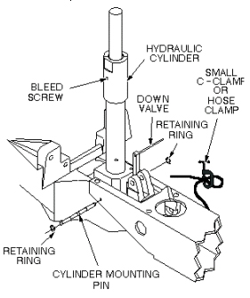
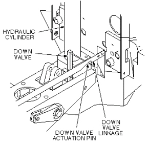
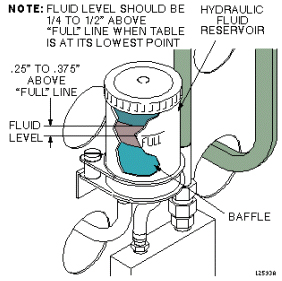

Patient Table Hydraulic Cylinder
Prerequisites
1 Remove Hydraulic Cylinder
Procedure
- Undock patient transport, and move it out of exam room.
- Remove both outer covers by removing mounting screws (see Figure 11).
- Remove both inner covers by removing mounting screws.
- Remove cradle assembly (see Figure 12.
- Raise table to up position.
 warning
warning- Unhook lock bar spring, and lower bar to horizontal position,
as shown in Figure 1, then lower table until lock bar fully supports
table top.
Figure 1. PATIENT TABLE LOCK BAR

- Remove plug from patient transport (see Figure 2).
- Remove retaining ring from end of adjustment screw.
- Remove retaining ring, washer, and Up Limit cable attachment
pin. Then remove tubing and washer. All are in Figure 2.
Figure 2. PATIENT TABLE HYDRAULIC CYLINDER REPLACEMENT

- Remove Up Limit cable attachment pin that extends through hydraulic
cylinder.note:
The hydraulic cylinder cannot be pressed unless the Down valve is opened. See Figure 7.
- Manually press hydraulic cylinder down until it is fully retracted.
- Disconnect two hydraulic lines from base of hydraulic cylinder, and fasten upward and aside to avoid excess spillage. Immediately fold and clamp the translucent (yellow) hose to prevent oil from draining from the reservoir (see Figure 3).
- Remove retaining ring from either end of cylinder mounting pin
at base of cylinder assembly (see Figure 3).
Figure 3. REMOVAL OF HYDRAULIC CYLINDER

- Remove cylinder mounting pin from base of hydraulic cylinder.
- Carefully move linkage to free actuation pin on Down valve (see Figure 4).
- Remove hydraulic cylinder from base of table assembly.
2 Install Replacement Hydraulic Cylinder
Procedure
- Prepare replacement cylinder for installation by pressing cylinder
to its fully retracted position. note:
It may be necessary to move linkage to fit actuation pin of Down valve into groove of linkage, as shown in Figure 4.
Figure 4. DOWN VALVE ACTUATION PIN

- Carefully set cylinder in base of table, taking care not to bend actuation pin on Down valve.
- Insert cylinder mounting pin securing base of hydraulic cylinder to frame of table (see Figure 3).
- Insert retaining ring.
- Connect two hydraulic lines to base of hydraulic cylinder.
- Insert adjustment screw into top of hydraulic cylinder (see Figure 5).
- Insert lock washer on adjustment screw.
- Position hydraulic cylinder so that top of adjustment screw is aligned with hole in table (see Figure 5).
- Pump up cylinder until table goes up slightly.
- Insert retaining ring at top of adjustment screw to secure cylinder to table (see Figure 5).
- Insert Up Limit cable attachment pin through hole in hydraulic
cylinder (see Figure 5). Do not attach the cable at
this time.
Figure 5. PATIENT TABLE HYDRAULIC CYLINDER REPLACEMENT
- Pump table up to the top of its travel.
- Attach washer and tubing to Up Limit cable attachment pin.
- Attach cable to end of Up Limit pin, and secure with washer and retaining ring. Adjust length if necessary to install, and to remove any slack.
- Ensure that lock bar is at its vertical (Unlocked) position
as shown in Figure 6, with the lock bar spring secured.
Figure 6. PATIENT TABLE LOCK BAR
- Partially open bleed screw on hydraulic cylinder until no air
is visible (see Figure 7).
Figure 7. HYDRAULIC CYLINDER DOWN VALVE

- Open Down valve and lower table to its lowest position.
- Hold Down valve open and exercise Up Pump foot pedal. This bleeds the hydraulic system by shunting air to the hydraulic reservoir.
- Bleed the cylinder again by partially opening bleed screw, when table is fully up, until no air is visible.
3 Final Calibration and Checks
Procedure
- Refer to procedure for Table Top Height Adjustment; perform those procedures, then perform the following steps.
- Fill table reservoir so that fluid is 1/4 to 1/2 inch above
full line when table is at its lowest position (see Figure 8).
Figure 8. PATIENT TABLE RESERVOIR FILL LEVEL

- Check Down valve linkage adjustment as shown in Figure 9.
Obtain desired tolerance between Down valve linkage and bracket by
adjusting two set screws on bracket.
Figure 9. DOWN VALVE LINKAGE ADJUSTMENT

- Replace plug in top of table (see Figure 10).
Figure 10. PATIENT TABLE HYDRAULIC CYLINDER REPLACEMENT
- Replace inner and outer covers. Note position of Signa logo
on outer covers and position toward front of table (see Figure 11).
Figure 11. REMOVAL OF PATIENT TABLE COVERS

- Replace cradle assembly (see Figure 12).
Figure 12. PATIENT TRANSPORT CRADLE REMOVAL

4 Finalization
Procedure
- Dock the Table and move the Table to the up limit position. Verify that the Table and Bridge are horizontally aligned and there is no height difference of Table and Bridge at right and left position.
- Verify that there is no part caught by wire or any movable module.
- Place the 159Kg Load evenly on the Cradle. If using the phantom,
refer to the following illustration.
Figure 13. 159Kg Load

- Verify that Table moves up and down fully and smoothly using the pedal of Table.
- Verify that Table moves up and down fully and smoothly using the pedal of Dock.
- Verify that Cradle moves in and out fully and smoothly.
- Verify that the amount of oil is properly filled.
- Verify that oil is not leaked from the cylinder. Refer to following
illustration for check points.
Figure 14. Oil Leak Check

- Verify that all of the parts and the screws are installed.
- Verify that there is no wound or dirt on the Table, Cradle, Pad, and Patient Strap.